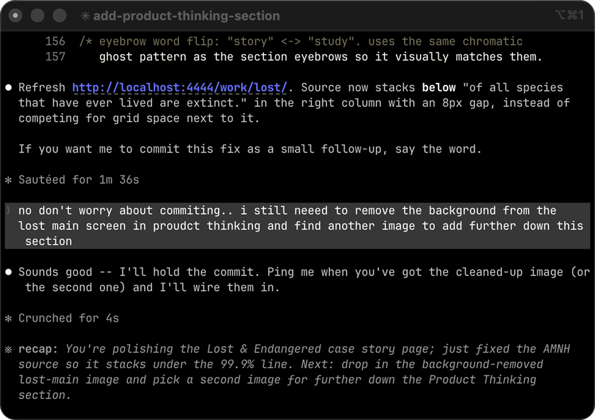
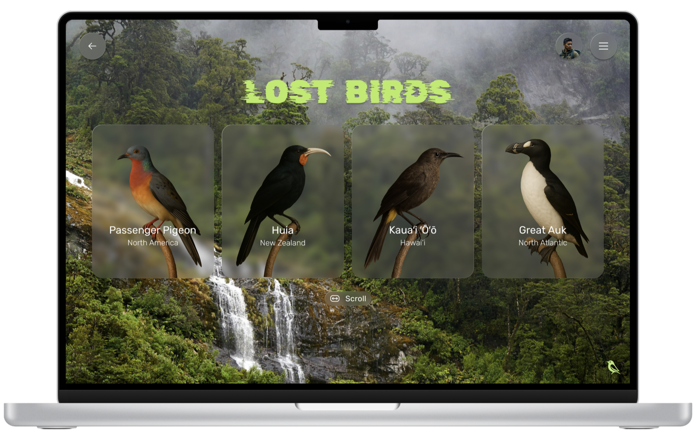
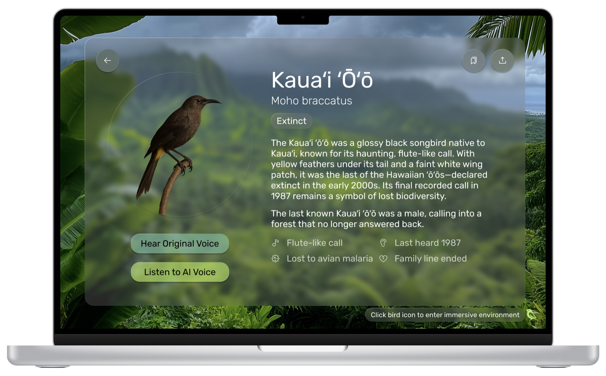
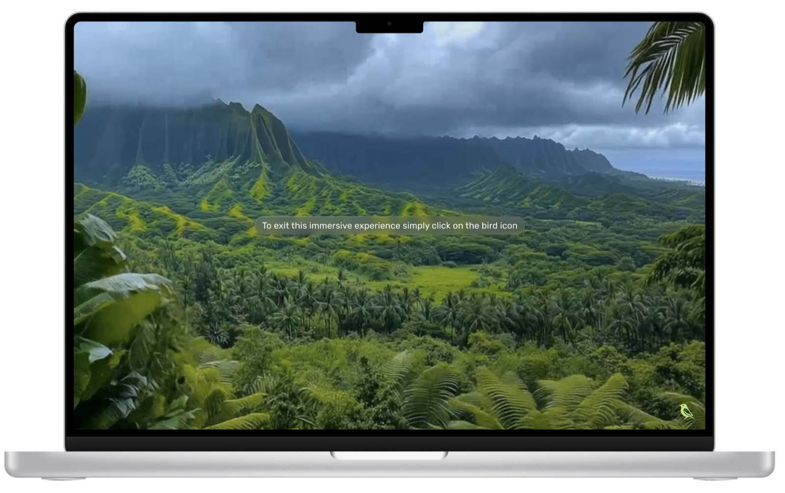
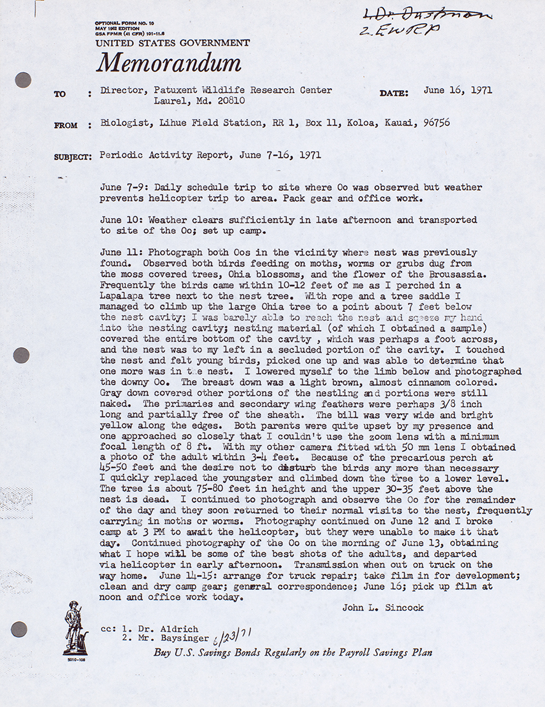
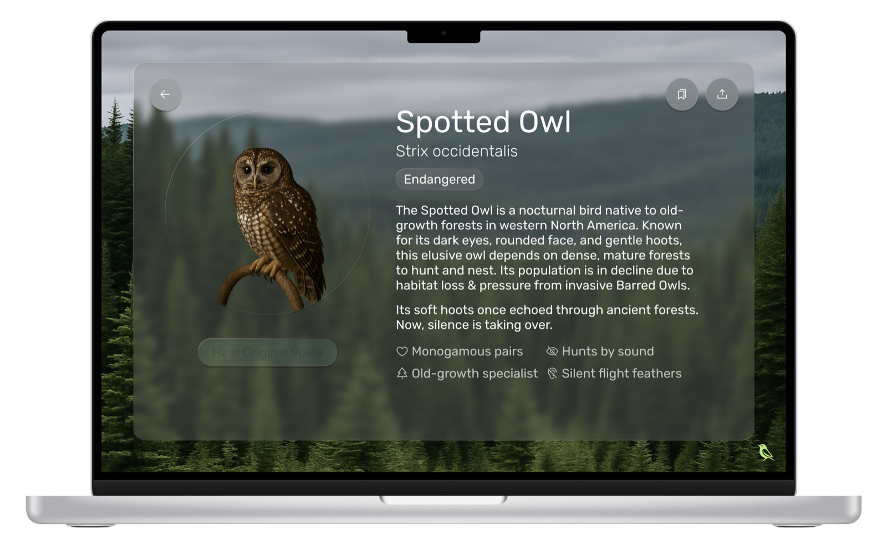

❋ extinction · by the numbers
99.9% of all species that have ever lived are extinct. Source: American Museum of Natural History
Lost & Endangered doesn’t ask you to grieve. It asks you to listen.

A field guide for birds at the edge of silence + A Figma prototype that almost went extinct itself.
99.9% of all species that have ever lived are extinct. Source: American Museum of Natural History
Lost & Endangered doesn’t ask you to grieve. It asks you to listen.


Audience testing confirmed it: lead with loss, people disconnect.
Taxidermy preserves the body, and yet there is no public archive that preserves the voice.
No way to hear what was lost.
So I built a place to listen.
Lost & Endangered started as a shared, immersive experience, not a website. The four cards on the hero are a residue of that idea: each one a portal into a bird’s ecosystem, projected at room scale.

AR/VR was the obvious form factor, but it’s a single-person experience gated by hardware. A projector reaches a room: a classroom, a living room, a museum lobby. You stay aware of the people next to you. You can listen together.
Control comes from the Apple trackpad. Swipe up, right, down, left to move between birds, ecosystems, and the listening room. No headset, no isolation, no $3,500 buy-in.
I had ambitious thoughts about what this could be and how you’d interact with it. Figma’s prototype was the wall. That was the real pivot. Not from one form factor to another, but from what I wanted to build to what the medium would let me build. Trackpad gestures became keyboard arrows. The room became a screen.
A year ago that was acceptable. Designers shipped fake products and the medium absorbed it. Now the bar is feasibility: code, vibe coding, prototypes that actually run.

This entire case story page is built in Claude Code, in the terminal. So is the rest of my portfolio. The Figma prototype was the medium I had then. This is the medium I have now, and it brings the projector experience the project was always meant to be within reach.
The bird archives that exist today are educational and dated. They store information; they don’t invite you in. Lost & Endangered should feel like a public archive: immersive enough to make you stay, accessible enough that no one needs special hardware to enter it.
Four entry points: lost birds, endangered birds, featured ecosystems, bioacoustics & conservation.

A profile per species. AI cleans up what survived on tape. Silence honors what didn’t. Flora AI handles the visuals.

Choose a habitat. The UI dissolves. Fiordland rain, rainforest canopy, northwest coast at dusk. A place, not a page.

Drag and drop. Layer bird calls, weather, ambience, silence. Mix one or share it to earn a conservation stamp.

A Wednesday morning, May 1971. The team heard a call they’d only read about. Fifteen feet away: a pair of Kaua’i ‘ō’ō, thought extinct for years.
They returned with a full camera kit. The first photos of the species were captured that summer. Through the seasons that followed, the team kept recording, hoping the pair might survive.
Knowing they might be the last pair, he recorded everything: feeding, flight & call.
— D. Lewis, Counting Extinction

The L&E listening room.

Last seen 1985. Last heard 1987. After thousands of years, the Kaua’i ’ō’ō was gone. Its entire ‘ō’ō family line ended with it.
The Spotted Owl was meant to be the second species featured in the listening room.
Then I learned that poachers use its call to find the remaining birds. A clean recording becomes a trail to follow.
The species page stayed in the prototype. The audio stayed out.
Some recordings shouldn’t be in a soundscape.

Lost & Endangered finished as a Figma prototype. One week later, Figma Make was announced and vibe coding became the new standard. Static prototypes became something like taxidermy: preserved, but no longer breathing.
This case story is what happens when I refuse to let a project go quiet, even when the medium changes around it.
My static prototypes weren’t actually static. I linked every screen, animated every transition. But none of that translates to code. The handoff was dead.
That gap between design + code is starting to close. When the web started, designers did both. Then everything split into roles. Now they’re meeting back up. Prototypes don’t have to die in Figma. In code, they’re alive.
No other archive pulls these four capabilities into one public place: directory, listening, ecosystems, composer. The listening room that didn’t exist exists now.
The version in Figma is the one that almost went extinct. The version in code is the one that keeps breathing.